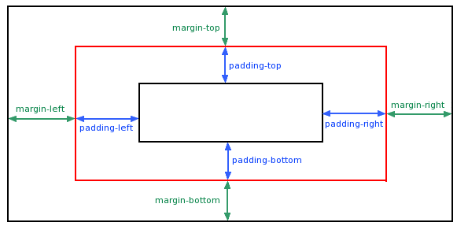

外边距margin与填充padding

外边距margin
属性定义元素周围的空间,margin 没有背景颜色，是完全透明的,可以理解为与父容器或兄弟容器的距离。
| 值 | 说明 |
|---|---|
| auto | 设置浏览器边距。 这样做的结果会依赖于浏览器 |
| length | 定义一个固定的margin（使用像素，pt，em等） |
| % | 定义一个使用百分比的边距 |
margin属性可以有一到四个值。
- margin:25px 50px 75px 100px;
- 上边距为25px
- 右边距为50px
- 下边距为75px
- 左边距为100px
- margin:25px 50px 75px;
- 上边距为25px
- 左右边距为50px
- 下边距为75px
- margin:25px 50px;
- 上下边距为25px
- 左右边距为50px
- margin:25px;
- 所有的4个边距都是25px
填充padding
容器与内容之间的距离。
| 值 | 说明 |
|---|---|
| length | 定义一个固定的填充(像素, pt, em,等) |
| % | 使用百分比值定义一个填充 |
Padding属性，可以有一到四个值，与外边距类似。